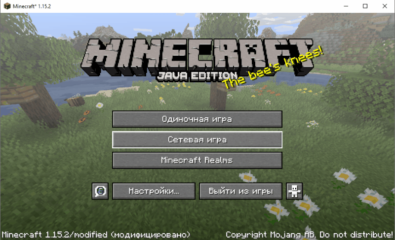

Как начать играть?
Скачайте T-Launcher
После запуска лаунчера , необходимо выбрать версию нашего сервера - '1.15.2' -> "Войти в игру"
После установки клиента, необходимо нажать "Сетевая игра" , "Добавить" ввести адрес сервера -
s14.joinserver.ru:25836
, после этого можно заходить на сервер

После захода на сервер, необходимо осуществить регистрацию:
/regiser пароль пароль
после того, как регистрация была завершена, чтобы войти на сервер необходимо авторизироваться:
/auth пароль
Clans-Strife
Начать играть
Донат
Описание серверов
Информация
Голосование
Закрыть ×
Группа Вконтакте
Проголосовать